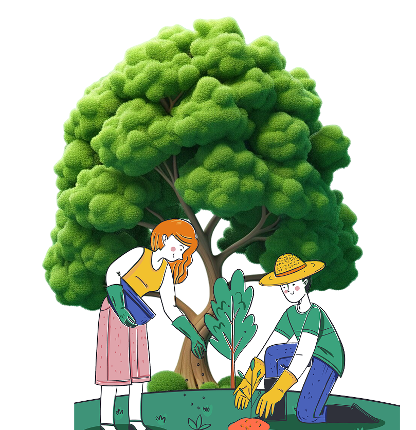

팝업
-
 숲의 상처와 회복의 과정을 담았습니다
숲의 상처와 회복의 과정을 담았습니다생명의 숲 활동가들의
자세히 보고 싶어요
산불 이후의 기록들을 살펴보세요 -
 특별한 날, 특별한 공간에 나무를 심어 보아요!
특별한 날, 특별한 공간에 나무를 심어 보아요!나무 한 그루에서 시작된 작은 관심이
자세히 보고 싶어요
도시를 바꾸고, 모두의 일상으로
1 그루
생명의숲이 함께 심은 나무 102,302그루가
숲에 새로운 숨을 불어넣었습니다
